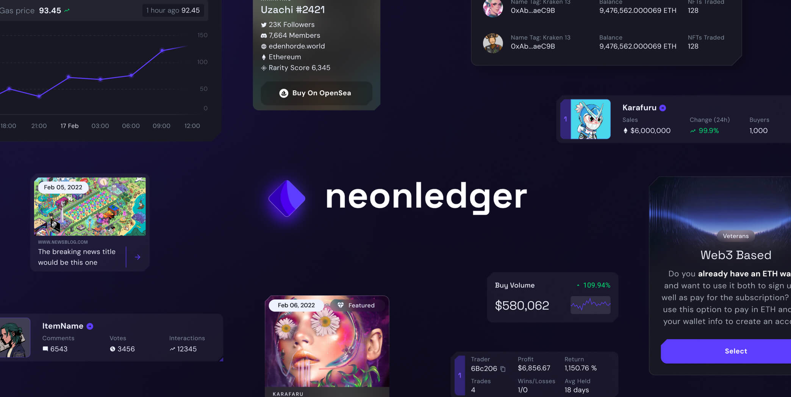
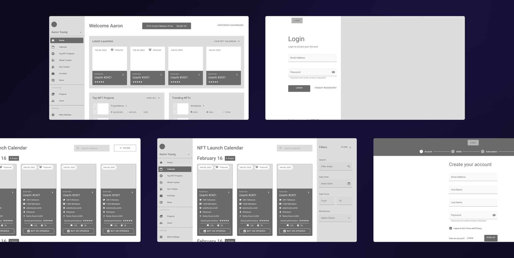
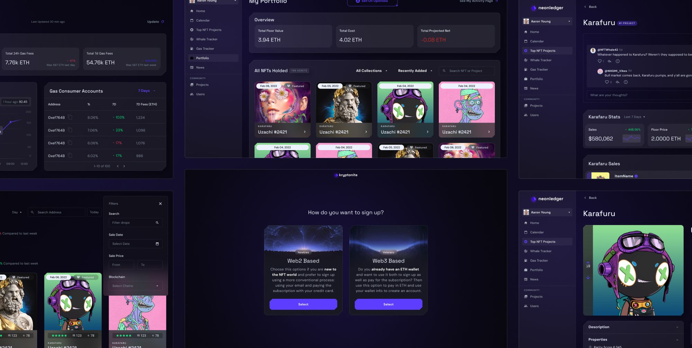
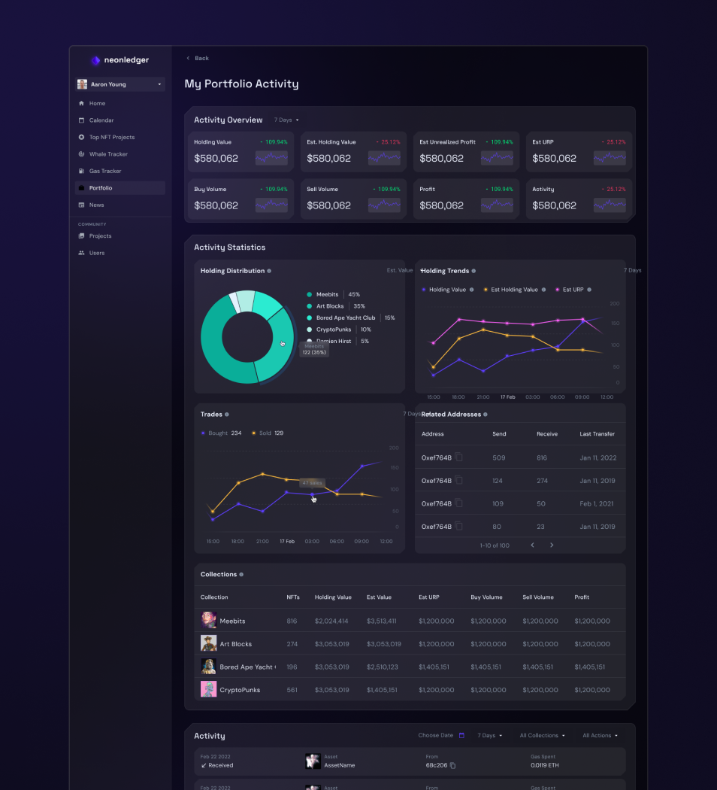
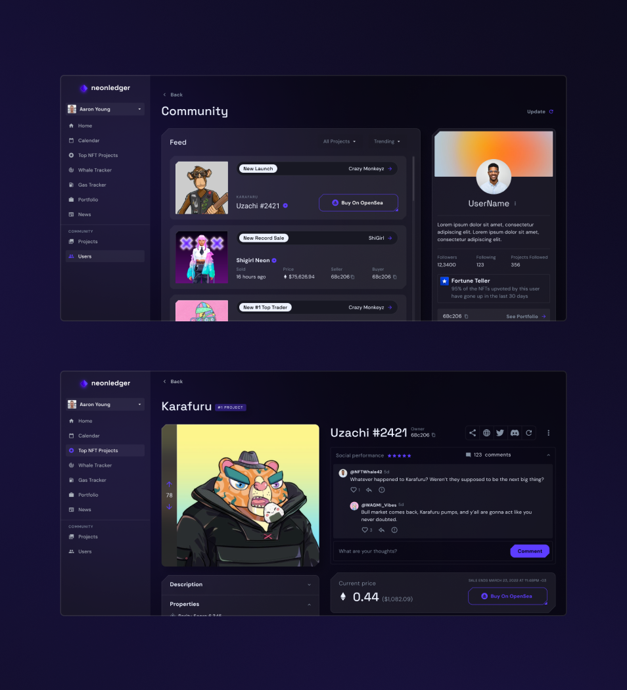
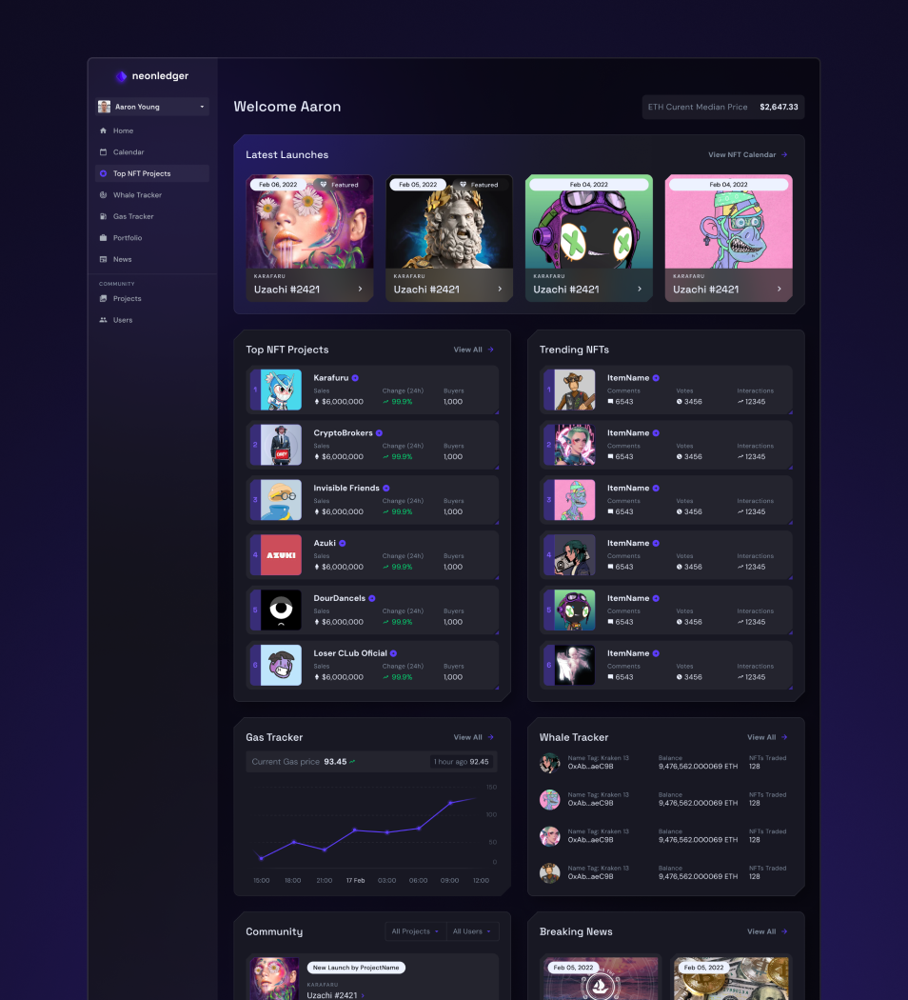

Neonledger
Planted: Mar 27, 2026. Last tended:
web app
NFTs
web3
figma
2022

Offloading info
The prompt
Once upon a time we used to be overrun by NFTs and web3 projects one after the other. Simpler times huh? So this project was one of those. We were approached with a simple foundational idea for a NFT hub where users could track both the ones they owned and the market in general, in order to make better trading decisions.
One step at a time
Understanding a new structure of information
The challenge was that as this was a new industry to us at the, we needed to spend a lot of time understanding how Web3, Crypto and NFTs worked. And the initial idea was very brief and global, so it was up to us to determine the whole flow, sections and tools of the app. For that we used many meetings with the stakeholders as well as sketching and flow tools to get a better understanding and validate the elements and interactions the interface needed, resulting in med-res wireframes which clearly shown the basics of this product.

One step at a time
Going all-in with UI
The stakeholders were clear in the visual style they were after: videogames inspired, and futuristic but in a playful way. So we created a heavily styles design system which made use of custom containers, shadows, light effects, transparencies and more to get that rich, textured and interactive style.

Keeping track of NFTs
The main usage of the product was being able to track all the info related to the NFTs, pulling across from a lot of databases to showcase the item's history, projections, current state, value and more. All of this information would help the users better decide what to do with their NFTs.


Building community
Part of knowing what to do in the NFTs world was also informed by what the people were saying and doing in that space. So it was really important to add a community aspect to the app, so we created a feed which also tied into each individual NFT and project.
Everything-NFTs hub
All of this together resulted in a hub that combined both the community aspects as well as the technical specs of the NFT world. Calendar, gas trackers, own portfolio tracker, etc. Everything was there for Neonledger to become your very own NFT toolset.
